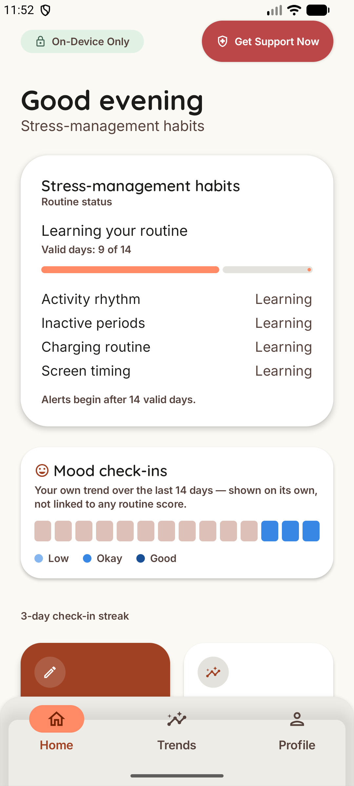
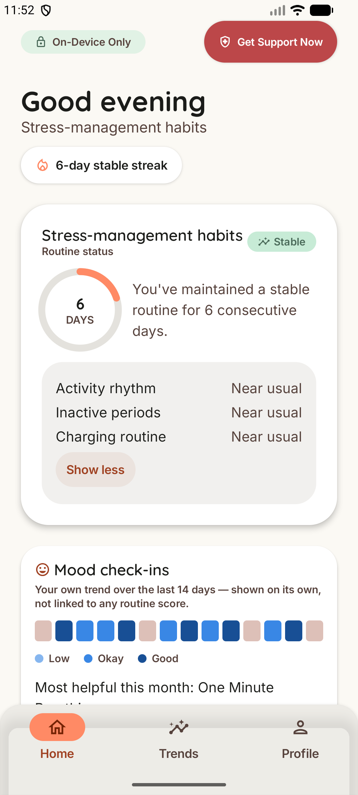
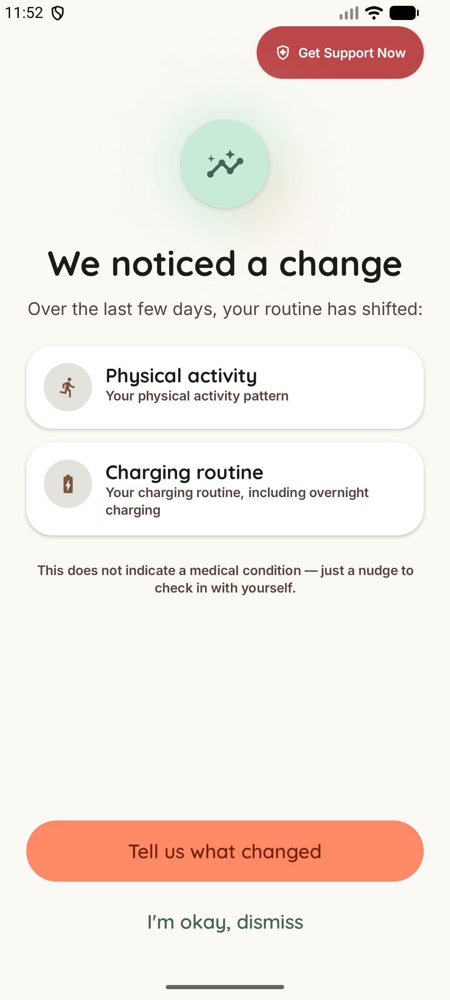
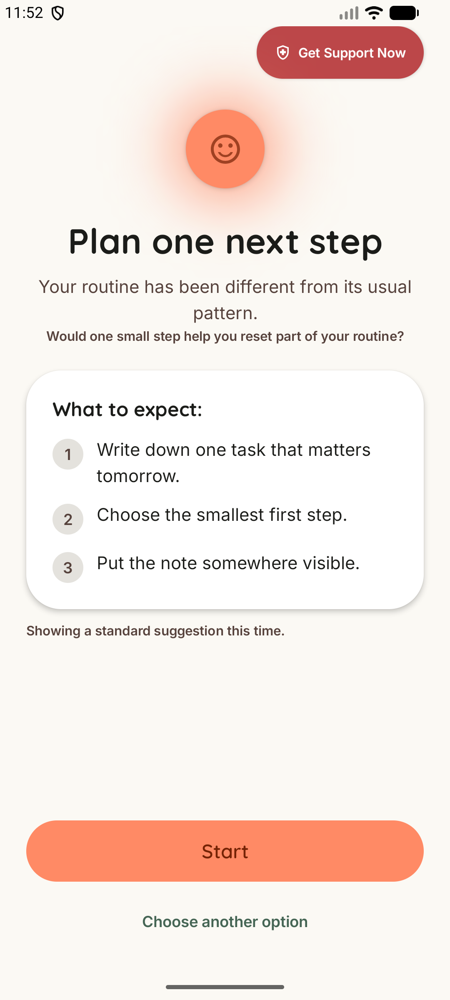
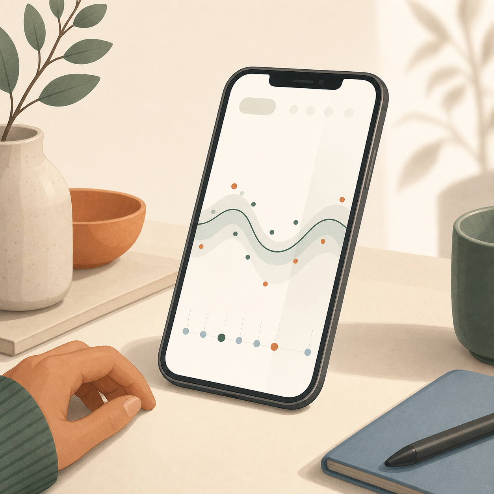
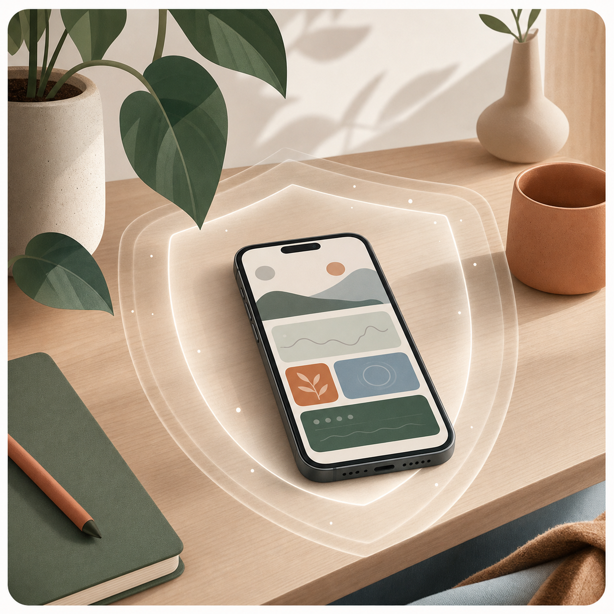
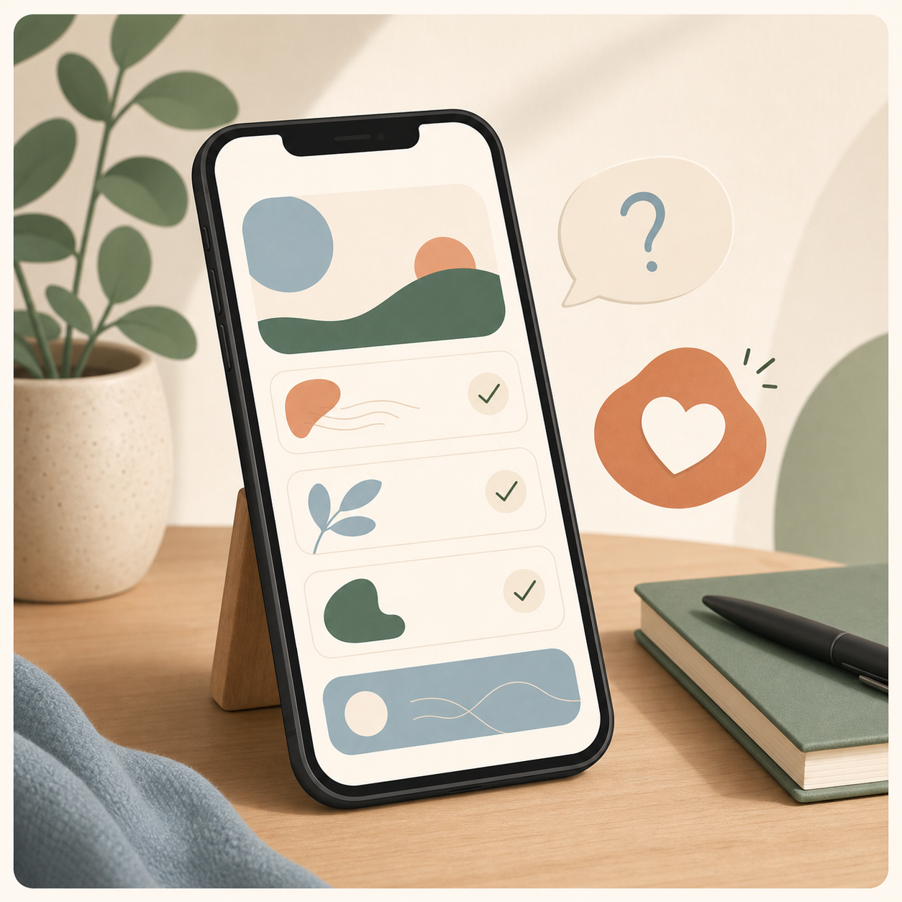
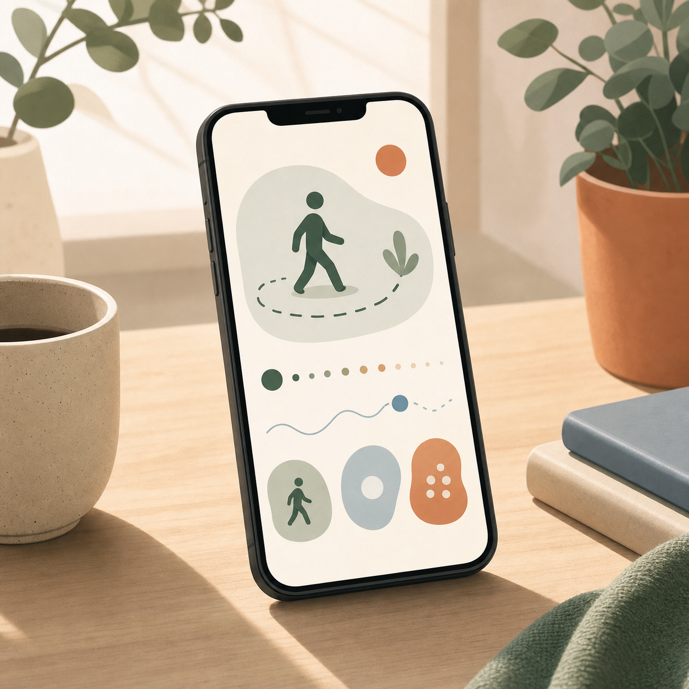
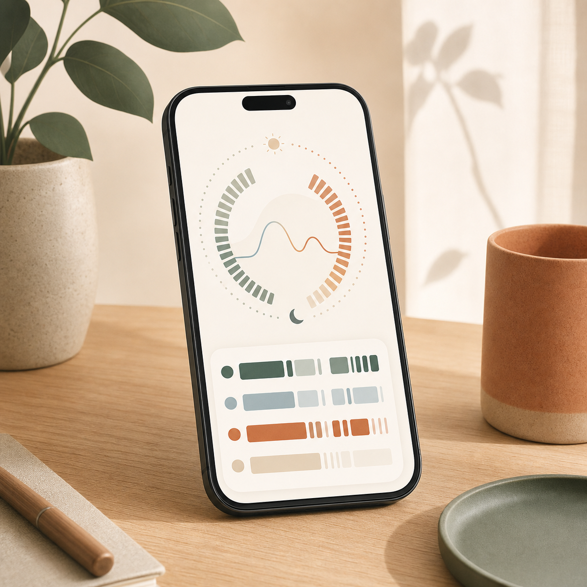
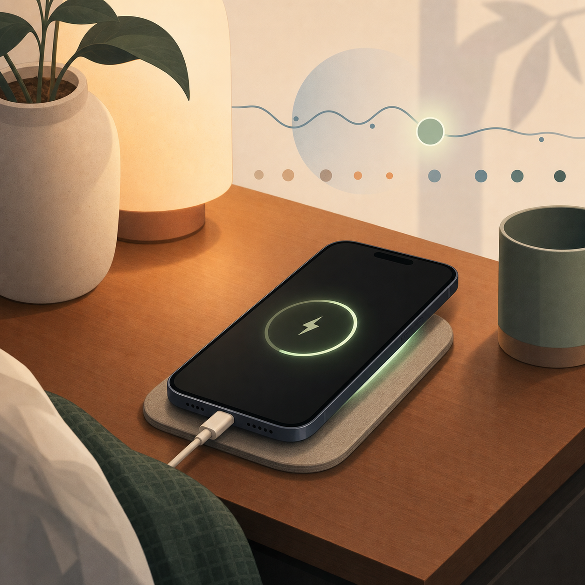

Gentle check-ins when your daily patterns start to change.
It learns simple phone-based routine patterns on your device, then checks in only when something meaningfully changes for several days.
From baseline to one useful check-in.
MindPulse learns your routine first, stays quiet when things look stable, and only steps in when a sustained change is worth reflecting on.




The flow is intentionally narrow: no endless chat, no diagnosis, and no pressure to log every day.
A calmer way to understand changes in your daily routine.
It does not ask you to journal every day or guess how you feel. It uses simple phone signals, compares them to your own normal pattern, and only checks in after a sustained shift.
Works quietly in the background
You can add a check-in when you want, but the app still works without daily forms or long mood logs.
Learns your personal baseline
It compares today with your usual routine, not with a generic idea of what a normal day should look like.

Keeps sensitive data on your phone
No messages, microphone, camera, contacts, or precise location. Routine insights are processed locally.

Gives support, not diagnosis
When a pattern changes for several days, it offers one gentle question and one small practical action.

What It Notices
MindPulse looks for broad routine patterns your phone can observe without reading personal content.

Movement rhythm
Recognizes broad activity states like still time, walking, and running, without tracking where you go.

Screen rhythm
Notices when your phone is active, locked, or unused for long stretches. It never reads apps, messages, or screen content.

Charging routine
Uses charging times, especially overnight patterns, as a simple clue about routine changes. No location or wearable data needed.
No microphone, camera, contacts, messages, call logs, or precise location. Raw events are deleted after 48 hours; only daily routine summaries stay on your phone.
How It Decides
Four checks keep the app quiet until a change is sustained, meaningful, and safe to mention.
14 Days
Learns your own baseline first: your personal normal, not a benchmark borrowed from anyone else.
3+ Days
A single unusual day is treated as noise. Only a deviation that persists for three or more consecutive days is considered.
2+ Signal Groups
The change has to show up across at least two of the three signal groups at once.
7-Day Cooldown
After surfacing a change once, it stays quiet before mentioning another one.
A short check-in, not an open-ended chatbot.
When a routine change passes every gate, the on-device model creates one neutral explanation, one reflective question, and one small action from a pre-approved list. If anything looks off, a fixed safe fallback is shown instead.
Neutral explanation
Plain language about what changed in your routine, without diagnosis or certainty about how you feel.
One reflective question
A gentle prompt to help you connect the change with your real-life context.
One practical action
A small step that fits your selected time, chosen from a controlled action library.
Measured on 565 held-out real test examples
A simple dashboard for the routine you care about.
Choose one focus during setup, and the app brings the most relevant trend to the front. Everything is compared with your own baseline and described as a routine change, never as a diagnosis.
What helped recently
See which small actions you marked useful, so the app can suggest better ones next time.
Mood stays separate
Your check-ins are shown honestly, without pretending they explain every routine change.
Progress without pressure
Simple streaks and stable days are visible, with no shaming copy or nagging notifications.
Your goal decides what appears first.
What it will never claim.
-
close
No diagnosis, condition label, or mental-health probability.
-
close
No claim that a routine score explains how you feel.
-
close
No guessed emergency help or location-based advice.
-
close
No analytics, ads, or cloud learning from your personal routine.
What stays under your control.
-
key
Only four permissions: activity, usage access, notifications, and boot restart.
-
wifi_off
Offline after setup: the model downloads once, then runs locally.
-
toggle_off
Disable any signal source; missing data is marked honestly, never faked.
-
delete
Delete all stored data whenever you want.
Real models, real data, real device tests.
This is more than a static app concept. The sensing pipeline, behavior model, language model, and on-device runtime were built and tested end to end.
Trained on phone-sensing data
A temporal encoder learns routine patterns from movement, lock, and charging signals.
Runs locally on device
A fine-tuned Gemma 3 270M model creates structured, safety-checked responses.
Conversion was verified
The on-device behavior model matched the Python reference within floating-point noise.
Measured on a real phone
Download, model load, inference, and safety fallback were tested beyond the emulator.
The behavior score is reported honestly: useful for routine awareness, not validated as a diagnosis or stress predictor.
Quick answers before you try it.
The important details: what runs offline, what data is used, and what the app will not claim.
Does it need internet?
Only during setup to download the local language model. After that, the app runs on-device.
Does it diagnose anything?
No. It describes routine changes and suggests small actions; it never names a condition.
What data does it use?
Movement state, screen/lock timing, and charging timing. No location, microphone, camera, contacts, or messages.
What can I download?
A portfolio build that demonstrates the product flow, models, safety layer, and device testing.
What happens if I delete it?
All personal data lives on the device. Uninstalling removes it, and the app also includes a delete-all-data control.
Built from dataset to on-device AI.
A privacy-first Android wellbeing system with behavior sensing, local models, safety validation, and real device testing.
Download download